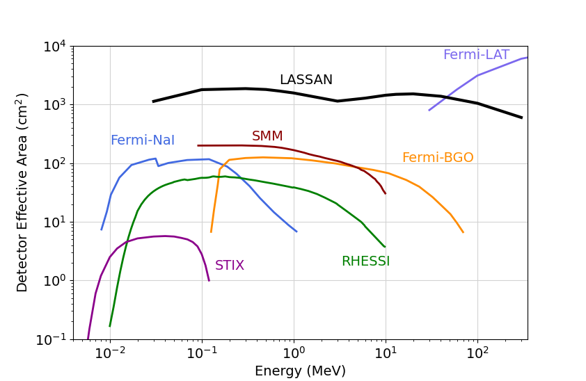
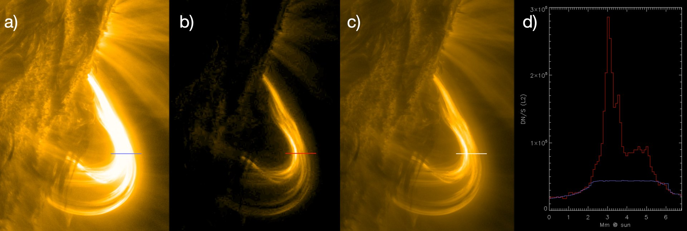
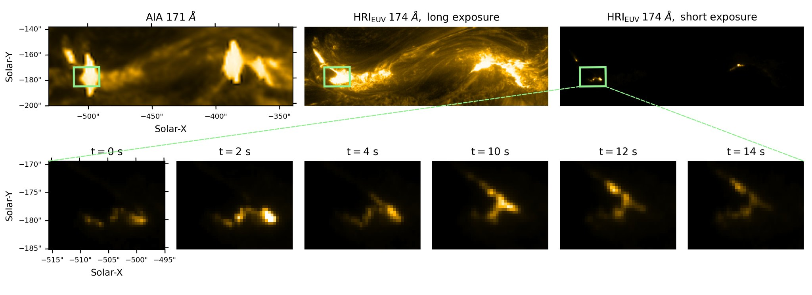

LASSAN
High-energy coverage
Requirement: γ-ray spectroscopy from about 40 keV to more than 100 MeV.
Science role: Connects non-thermal electrons, energetic ions and relativistic ions in a single flare measurement.
Payload
SPARK’s payload is built around a single measurement philosophy: identify the accelerated particles and observe the atmospheric response at the same time.
Large Area Spectrometer for Solar Accelerated Nuclei
LASSAN provides γ-ray and X-ray spectroscopy from 4 keV to more than 100 MeV, allowing simultaneous measurement of hot plasma, non-thermal electrons, MeV ions and relativistic ions.
High Resolution Flare Imager
HiFI delivers high-cadence, high-resolution EUV imaging of flare ribbons, kernels, loops, waves and plasma flows while avoiding the saturation that limits current flare observations.
Instrument requirements
These cards translate the Step‑2 instrument requirements into a web-readable form. They show how each instrument enables the electron, ion and plasma diagnostics required by the science objectives.
LASSAN
Requirement: γ-ray spectroscopy from about 40 keV to more than 100 MeV.
Science role: Connects non-thermal electrons, energetic ions and relativistic ions in a single flare measurement.
LASSAN
Requirement: Large effective area for high-cadence flare spectroscopy.
Science role: Turns rare γ-ray ion diagnostics into routine measurements across statistically useful flare samples.
LASSAN
Requirement: Sufficient spectral resolution for nuclear-line diagnostics.
Science role: Enables composition, ion-energy and nuclear-line studies needed to constrain acceleration mechanisms.
LASSAN / Co-STIX
Requirement: X-ray imaging spectroscopy from about 4–150 keV.
Science role: Places high-energy electron signatures in the flare geometry observed by HiFI.
HiFI
Requirement: EUV imaging at 304 Å, 171 Å, 94 Å and 132 Å.
Science role: Tracks transition-region, coronal and hot flare plasma across the thermal response of the atmosphere.
HiFI
Requirement: Imaging cadence down to 0.5 s.
Science role: Resolves rapid flare kernels, QPPs, waves and impulsive energy deposition.
HiFI
Requirement: Spatial resolution of approximately 0.28″.
Science role: Resolves fine-scale flare ribbons, kernels, plasmoids and loop structures.
HiFI
Requirement: Active-region-scale high-resolution EUV field of view.
Science role: Captures flare sites while preserving the spatial detail required to connect plasma evolution with particle signatures.
Instrument figures

Why this matters: Higher effective area enables time-resolved γ-ray spectroscopy across many more flares.

Why this matters: HiFI builds on this concept to capture flare-core emission without saturation.

Why this matters: HiFI is designed to make this type of flare observation routine across multiple temperature channels.